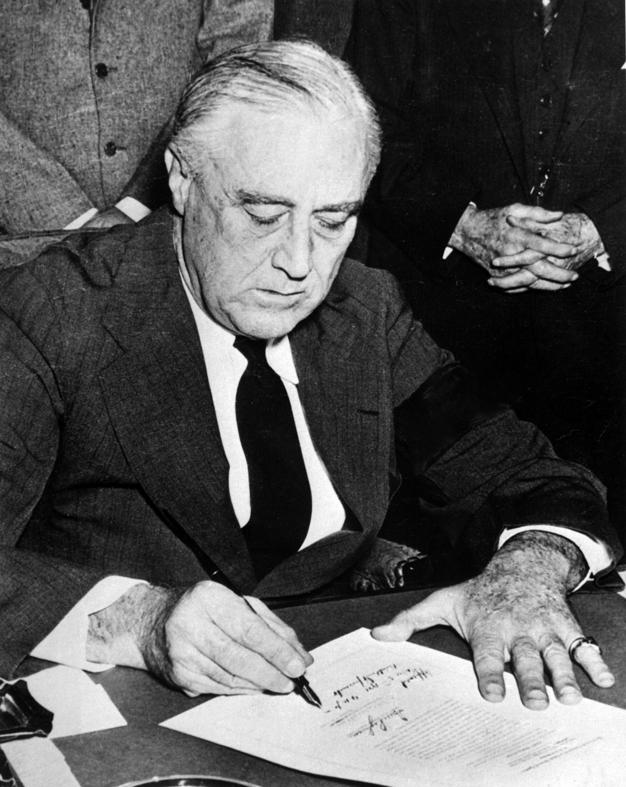

Directions: Fill in the chart as we study the war's opening. Keep this page in your notebook. You will use it again on the review day before the unit test.

| Question | Settled or open | What the record shows |
|---|---|---|
| Would the United States fight? | ||
| Against whom, and in how many oceans? | ||
| With which allies, and in what order? | ||
| When would France be invaded? | ||
| Could industry build the arsenal in time? |
The riskiest open question. Pick one open row of the chart and write a short paragraph on the risk it carried. What depended on its answer, and what was the worst outcome if it went wrong?
| Question | Settled or open | What the record shows |
|---|---|---|
| Would the United States fight? | Settled | The attack of December 7, 1941 killed more than 2,400 Americans and ended the neutrality debate in a day. Congress declared war on Japan on December 8, the Senate 82 to 0 and the House 388 to 1. |
| Against whom, and in how many oceans? | Settled, by the enemy | Germany and Italy declared war on the United States on December 11, and Congress answered without a dissenting vote. The war would be fought in two oceans against all three Axis powers. |
| With which allies, and in what order? | Settled | The Grand Alliance joined the United States, Great Britain, and the Soviet Union, with 26 nations signing the Declaration by United Nations on January 1, 1942. The staffs held to Germany first, concentrating the main effort on Germany before Japan. |
| When would France be invaded? | Open | The Soviet Union demanded a second front in western Europe from 1942 onward. The western Allies landed in North Africa in 1942 instead, judging themselves short of landing craft, trained troops, and air strength. France was invaded in June 1944. |
| Could industry build the arsenal in time? | Open | In December 1941 the arsenal existed mostly as factory orders. Roosevelt's public targets for 1942 were 60,000 warplanes, 45,000 tanks, 20,000 antiaircraft guns, and eight million tons of merchant shipping, and none of it yet existed in December 1941. |
The riskiest open question. Strong answers name the row, the dependency, and the worst case. On the second front: the Soviet Union was carrying the largest land fighting, and a delay of years risked Soviet collapse or a separate peace, which would free Germany to face the west alone. On production: every strategy in both oceans depended on ships, planes, and trained forces that existed only as orders in December 1941, and a failure of production would have left the Grand Alliance with a plan and no means to carry it out. On the Pacific: Japan held the ocean the carriers had to cross, and the defeats of the spring of 1942, Bataan above all, showed the distance involved.